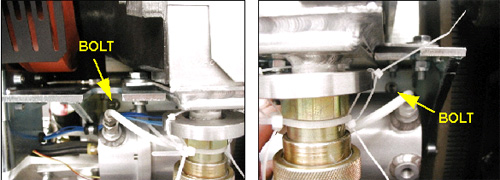
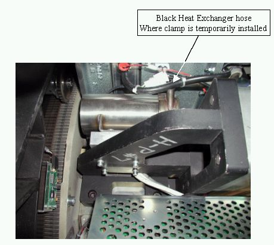
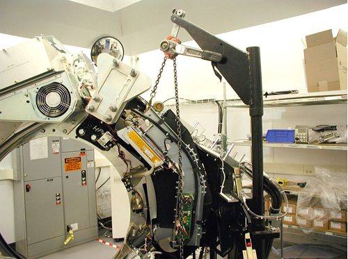
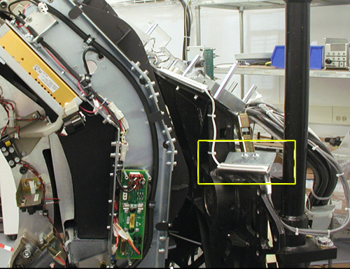
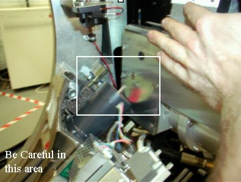
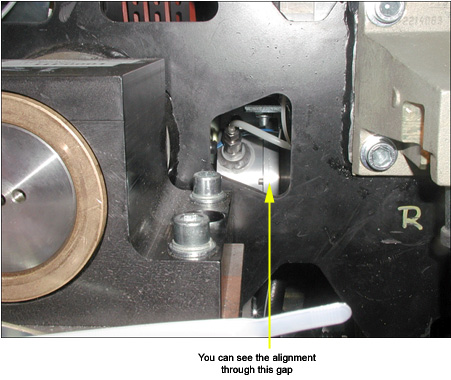

Operating Documentation
Direction 5193855-800, Rev# 4
LS 5.X RT Ltd. Access Service Information Adv
Operating Documentation |
| Required Persons | Preliminary Reqs | Procedure | Finalization |
|---|---|---|---|
| 1 | Timing Not Applicable | 1.5 hour hours | Timing Not Applicable |
In order to replace the Heat Exchanger unit:
Lockout system
Remove HX pump
Replace heat exchanger
Re-install HX pump
Reconnect heat exchanger
| Last Revised: | July 07, 2005 |
| Item | Qty | Effectivity | Part# | Manufacturer | |
|---|---|---|---|---|---|
| Hose Clamp | 1 - Shipped with pump and heat exchanger | Water-based coolant systems | 5122103 | - | |
| POTENTIAL FOR SHOCK. | |
| VOLTAGE MAY BE PRESENT. | |
| Use proper lockout/tagout procedures before replacing components. |
| POTENTIAL FOR SHOCK. | |
| VOLTAGE MAY BE PRESENT. | |
| Use proper lockout/tagout procedures before replacing components. |
Remove power to the gantry using proper Lockout / Tagout procedures.
Remove gantry covers.
Turn OFF all 3 switches (AXIAL DRIVE ENABLE , HVDC ENABLE, 120 VAC) on the Service Switch Panel.
Remove the right front gantry cover mounting bracket. See Illustration 1.
Illustration 1: Right Front Gantry Cover Mounting Bracket

Remove the Power Interface board cover.
Disconnect Power Interface board connectors J1, J2, and J7.
Remove HX pump. Reference the Heat Exchanger Pump Replacement (Pro16) procedure for the process.
Rotate the gantry so that the tube is at approximately the 3 o'clock position, such that you can reach the lower mounting bolts for the heat exchanger. See Illustration 2.
Illustration 2: Lower HX Mounting Bolt Locations

Remove the two lower HX mounting bolts.
If this system is a water-based cooled system, use the small metal clamp (shipped with replacement part) to clamp off the black heat exchanger hose (see Illustration 3). This will prevent air ingestion during the replacement process. The clamp should be installed finger-tight.
Oil-cooled systems skip this step.
Illustration 3: HX Hose for clamping (water-based systems)

Disconnect the HX from the X-Ray tube's cooling hose at the quick disconnect on the HX.
Rotate the gantry so that the tube is between 4 and 5 o'clock, with the heat exchanger lifting point at approximately 2 o'clock. See Illustration 4.
Illustration 4: Gantry Position

Lock the gantry in position, using the rotational lock. Ensure that gantry rotation is locked by attempting to rotate the gantry by hand.
| SEVERE INJURY POSSIBLE. | |
| IF THE HOIST HOOK'S LOCK NUT IS LOOSE, THEN THE HEAT EXCHANGER MIGHT DROP FROM THE HOIST, WITH THE RESULTING IN SERIOUS INJURY TO SERVICE PERSONNEL. | |
| before using the hoist, check to make certain that the hook's lock nut is not loose. If it is loose, do not use the hoist. instead, order a new hoist. |
Assemble the gantry post / boom / hoist and connect the hook to the lifting point on the HX. Be sure to remove the slack in the chain, as shown in Illustration 4.
Remove Gantry Contact Switch support bracket. See Illustration 5.
Illustration 5: Gantry Contact Switch Support Bracket

| CRUSH HAZARD. | |
| WHEN THE UPPER MOUNTING BOLTS ARE REMOVED, THE HEAT EXCHANGER UNIT MAY SHIFT. | |
| Be sure that your hands are clear. |
Remove the two upper mounting bolts.
| Be careful in this area when removing and installing the heat exchanger. | |
| Use the hoist to adjust the HX to clear the laser light bracket and avoid obstacles like the collimator cam motor. Also be sure NOT to cut any wires near the tube. See Illustration 6. | |
Using the hoist to control the height of the HX, carefully swing the HX free from the gantry.
Illustration 6: Handling the Heat Exchanger

Using hoist, swing new HX into place on the gantry. Be careful in the collimator motor area where it is possible to cut wires and damage other equipment. See Illustration 6.
Start the upper HX mounting bolts by hand. Use the hoist to adjust height if necessary. You will also need to use some force to get the HX to align with the mounting holes on the gantry's rotating base.
Tuck the rubber shield underneath the HX under the bracket on the rotating base. See Illustration 7.
Illustration 7: Rubber Shield Tucked

Visually check to see if the lower front mounting hole is aligned through the small cutout in the gantry frame. See Illustration 8. If you are aligned move on, otherwise loosen upper bolts and align.
Illustration 8: Checking Alignment

Apply “preload” torque to the UPPER M12 mounting bolts:
| 25 ft.-lbs | 33 N-m | 295 in-lbs | 340 kg-cm |
Disconnect the hoist from the HX.
Disengage rotational lock.
Rotate the gantry so the tube is at the 3 o'clock position and you can reach the lower HX mounting points.
Apply “preload” torque to the LOWER M12 mounting bolts:
| 25 ft.-lbs | 33 N-m | 295 in-lbs | 340 kg-cm |
Make the following HX connections:
J1, J2, J7 on Power Interface board.
X-Ray tube to HX hose.
Secure the quick disconnect safety locking mechanism. The torque spec. for the quick disconnect safety mechanism is 9.9 N-m (7.3 lb-ft, 88 lb-in, 101 kg-cm), however, if the locking mechanism rotates in relation to the quick disconnect, tighten slowly until it does not do so.
| NOTE: | Do not severely overtighten the M6 bolts. Doing so can cause the quick disconnects to leak. |
Rotate the gantry so the tube is at the 4 o'clock position.
Apply final torque to the two UPPER mounting bolts:
| 49 ft.-lbs | 66 N-m | 590 in-lbs | 680 kg-cm |
Install HX Pump. See Heat Exchanger Pump Replacement procedure for installation directions.
Reattach the cover on the Power Interface Board.
Make sure you reattach any tie wraps that you removed.
Reattach Gantry Contact Switch support bracket. See Illustration 5.
Reattach Gantry Right Front cover mounting bracket. See Illustration 1.
Ensure that proper torque specifications (see Torque Wrench Information) are followed for all fasteners.
Run the Gantry Balance Procedure (Pro16, RT) to ensure that the gantry is safe for all rotation speeds.
Ensure that the clamp installed in Heat Exchanger (HX) Removal, Step 10 is removed, if applicable.